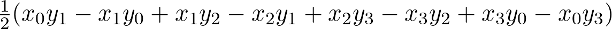

,
,W pliku tekstowym opisane są działki — ich położenie, kształt i cena za metr kwadratowy. Każda działka jest wielokątem. Każde kolejne dwa wiersze opisują jedną działkę. Pierwszy z dwóch wierszy zawiera jedną liczbę całkowitą — cenę za jeden metr kwadratowy działki. Drugi wiersz zawiera współrzędne kolejnych wierzchołków wielokąta opisującego działkę. Ostatni punkt powinien pokrywać się z pierwszym. Każdy punkt opisany jest przez dwie liczby w nawiasach oddzielone od siebie spacją. Przykładowy opis położenia działki może wyglądać tak (0.0 0.0) (1.0 0.0) (1.0 1.0) (0.0 1.0) (0.0 0.0). Współrzędne wyrażone są w pewnym prostokątnym układzie współrzędnych prostokątnych, w którym jednostką jest metr.
Przykładowy plik z działkami :
Pole powierzchni działki możesz policzyć ze wzoru (https://en.wikipedia.org/wiki/Shoelace_formula)
,
przy czym
 .
.
Np. dla prostokąta będzie to
.
Jeżeli ze wzoru wyjdzie wartość ujemna, to należy wziąć z niej wartość bezwzględną.
W pliku wynikowym mają się znaleźć wartości działek (cena za metr kwadratowy pomnożona przez powierzchnię) — każda w osobnym wierszu. Wartości mają być zapisane z dwoma miejscami po przecinku.
Plik wynikowy dla przykładowego pliku z działkami ():
Nazwy plików mogą być pobierane przez program od użytkownika, ale mogą być też po prostu wpisane „na sztywno” w kodzie programu. Program powinien w miarę możliwości wykrywać błędy takie jak np. brak możliwości otwarcia zadanego pliku lub błędy podczas czytania danych z pliku. W przypadku wykrycia błędu program powinien po prostu wyświetlić odpowiednią informację i zakończyć działanie.